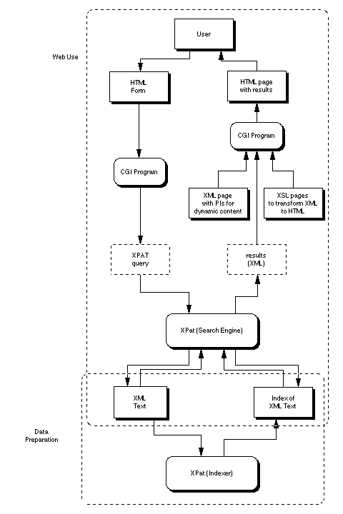

The University of Michigan Digital Library eXtension Service (UM DLXS) offers a suite of resources designed to aid educational and non-profit institutions mount a variety of types of digital library collections. Since 1996, the University of Michigan Library has worked to serve a growing need for institutions like Michigan to put encoded text collections online. The UM DLXS offers both a search engine and a set of tools for mounting digital library resources. The search engine, XPAT, is specially designed to handle large and highly structured documents and metadata such as that found in digital library efforts. The tools that UM DLXS makes available are designed to tap the power of the XPAT engine for broad classes of resources consistent with digital library activities. The following sections review the major components of DLXS systems, and the diagram included here provides a graphical overview of DLXS systems.
The XPAT engine is an SGML- and XML-aware search engine, able to index, search and retrieve UTF-8 Unicode-encoded text data, that the University of Michigan has deployed with an extremely diverse set of digital library resources. XPAT is based on the search engine previously marketed by Open Text as OT5(TM), and sometimes referred to as "Pat" and "Pat5.0." XPAT provides excellent support for word and phrase searching, indexing of SGML/XML elements and attributes, fast retrieval, and ease of integration with different software. As part of the UM DLXS, the University of Michigan Digital Library Production Service has launched a continuous development process in which we hope to add a number of features to XPAT. For more information, please see XPAT documentation.
DLXS seeks to enable digital library activities, particularly in the area of access/information retrieval for large collections of material. To this end, significant resources are devoted to developing and supporting access mechanisms for many types of collections found in the digital library (e.g., continuous tone image collections, page image based books with associated OCR, and SGML/XML encoded books and journals). Significant classes include a class for monograph length books (both modern and historical), a class for images and image metadata, a class for bibliographic information, and a class for finding aids (currently in a "pre-class" state, utilizing some but not all class infrastructure). A large and growing set of behaviors (such as types of searches and browses) is applied to these classes. All classes are documented, and information is available online. Information on "behaviors" is being cataloged by the Interface Specialist, and may at some point be online as part of User Interface documentation.
DLXS distributes and supports several software modules, each based on the evolving DLPS "classes" and "behaviors." This middleware is made available online as free, open source software, though it all currently depends on the licensed DLXS search engine, XPAT (see above). UM DLXS staff members develop nearly all current middleware in Perl. Perl was chosen as the middleware language because of, among other things, its powerful regular expression text manipulation and ease of customization. The DLXS Architecture is not, however, predicated on a Perl development environment, and we are open to exploring (or seeing others explore) alternatives that meet the current set of design needs. For a related architectural overview, please see the UM DLPS Architecture Overview.
DLXS systems are devoted entirely to digital library resources that rely on (or can capitalize on) encoded data and metadata. By using XPAT to index the underlying information, DLXS systems can incorporate XML (both well-formed and valid) and fully validated and normalized SGML. In some cases, such as encoded texts, the entire digital library object is in XML or SGML. In others, such as continuous tone image resources, only the metadata is SGML or XML, and the images are in other formats. Documentation for each DLXS class has an overview of the encoding supported and the various types of digital library resources it can support.
This diagram represents some components of the underlying indexed SGML/XML and the web interface to it. The "Data Preparation" box shows how the XPAT index is created based on the SGML/XML data. The "Web Use" box shows how search information is captured from the user, processed by the CGI program into a valid XPAT query and how the SGML/XML returned by the XPAT search engine is massaged into displayable HTML for the user, via XSLT, to view and navigate.
